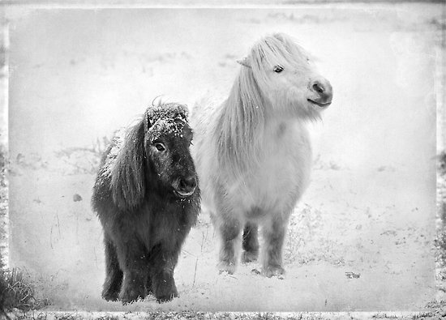

The Shetland pony is a breed of pony originating in the Shetland Isles, located northeast of mainland Scotland. Shetland Ponies are hardy and strong, in part because the breed developed in the harsh conditions of the Shetland Isles. In appearance, Shetlands have small heads, sometimes with dished faces, widely spaced eyes and small and alert ears. The original breed has a short, muscular neck; a compact, stocky body; short, strong legs; and a shorter-than-normal cannon bone in relation to its size.
A short broad back and deep girth are universal characteristics, as is a springy stride. Different breed registries have different height standards, but the outside ranges are between 7 and 11.2 hands (28 and 46 inches, 71 and 117 cm).
For its size, the Shetland is the strongest of all horse and pony breeds. It can pull twice its own weight under circumstances where a draft horse can only pull approximately half its own weight, as well as many being able to carry up to 130 pounds (59 kg) .Shetland ponies are found worldwide, though mainly in the UK and North America. Many ponies are long-lived; it is not unusual for a Shetland pony to live more than 30 years.
